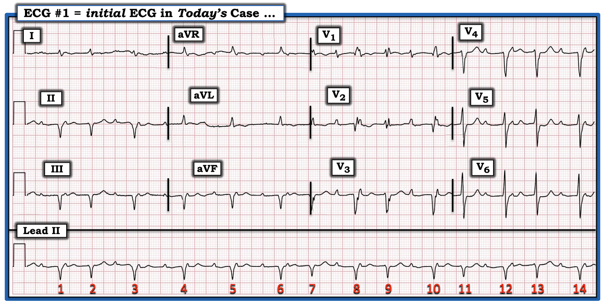
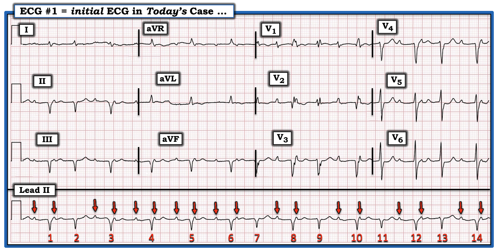
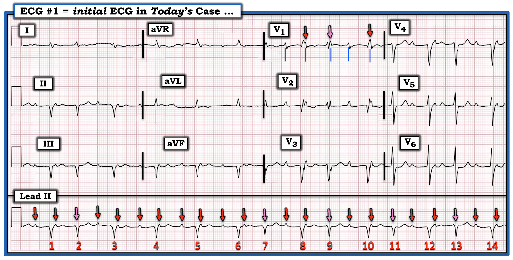
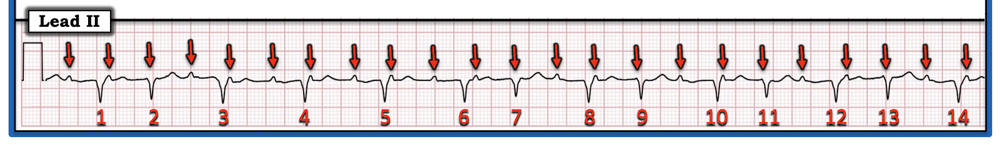
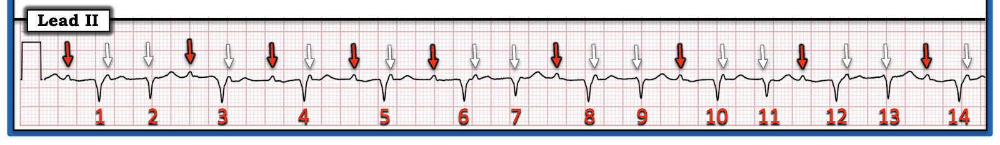
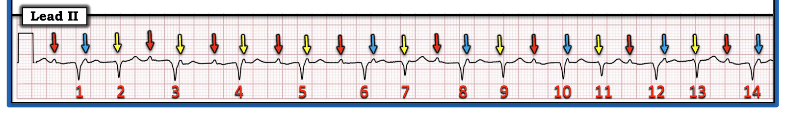
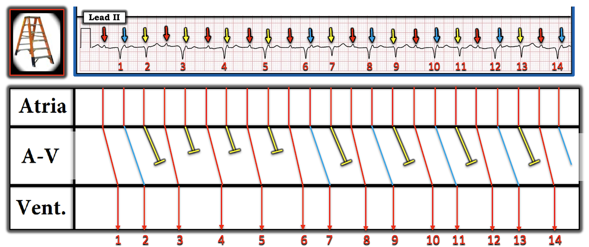
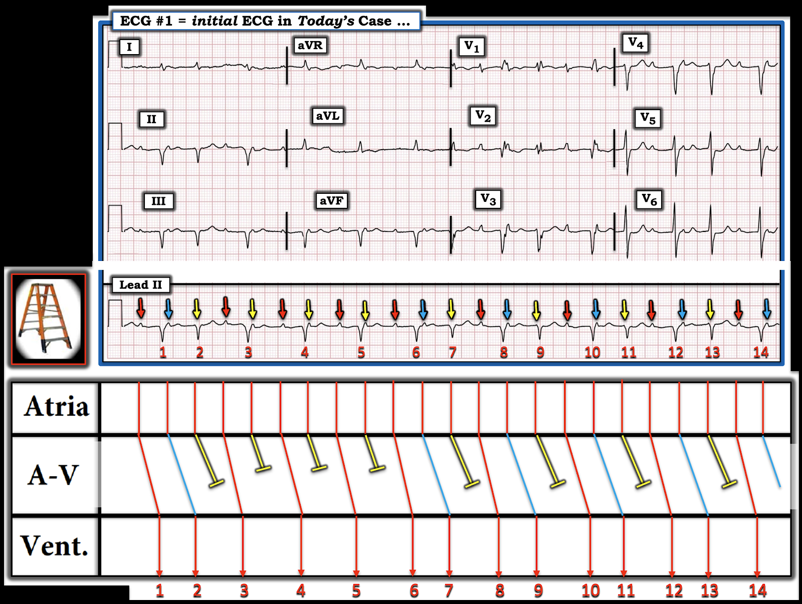
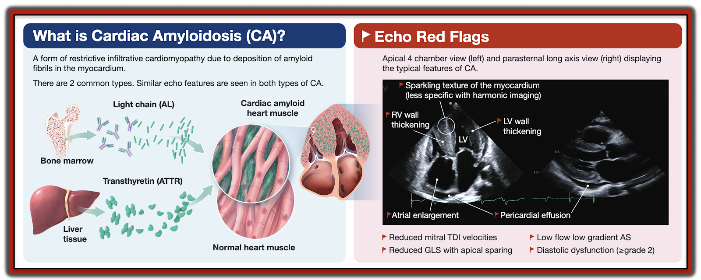
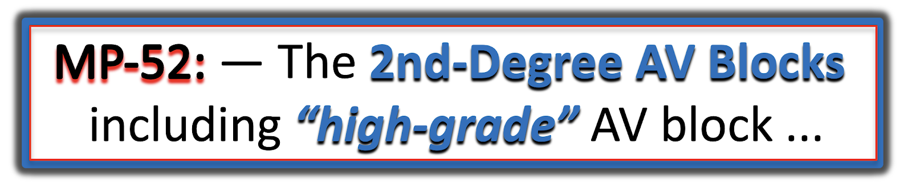

ECG Blog #480 — Một bệnh nhân bị amyloidosis ...
Điện tâm đồ ở Hình-1 được ghi từ một người đàn ông ở độ tuổi 60, có tiền sử bệnh amyloidosis tim. Gần đây ông than "hơi chóng mặt" — nhưng không đau ngực.
- Hiện không có bản ghi cũ nào để so sánh.
CÂU HỎI:
- Bạn đọc điện tâm đồ này như thế nào?
- — Đã có nhồi máu cơ tim (MI) chưa?
- — Nhịp là gì?
- — Tiền sử amyloidosis tim có liên quan không?


==================================
Tiền sử Amyloidosis Tim có Liên quan không?
Nói gọn một chữ — câu trả lời là CÓ. Tôi ôn lại một số điểm cơ bản về Amyloidosis tim ở PHẦN BỔ SUNG #1 bên dưới — nhưng lúc này, hãy nhớ một số dấu hiệu trên điện tâm đồ bạn có thể gặp ở bệnh nhân amyloidosis tim. Các dấu hiệu đó gồm:
- Điện thế thấp (nhất là ở các chuyển đạo chi).
- Rối loạn dẫn truyền (tức là LBBB, RBBB, blốc phân nhánh).
- Các dạng blốc AV (độ 1, độ 2 hoặc độ 3).
- Các rối loạn nhịp khác (nhất là AFib).
- Sóng Q không do nhồi máu (tức là hình ảnh giả nhồi máu (pseudo-infarction pattern)).
- HOẶC — Một số bệnh nhân không có bất thường điện tâm đồ, nhất là ở giai đoạn sớm của bệnh.
==================================
Quay lại Điện tâm đồ Hôm nay:
Cần lưu ý — Bệnh nhân hôm nay không đau ngực. Thay vào đó, ông than "hơi chóng mặt" — nhưng không khởi phát cấp tính rõ ràng. Vì vậy — tôi bắt đầu bằng việc đánh giá dải nhịp chuyển đạo II dài ở Hình-1. Theo cách tiếp cận Ps,Qs,3R (như trong ECG Blog #185) — tôi nhận thấy như sau:
- Nhịp ở chuyển đạo II dài không đều (Regular).
- Do nhịp thất không đều — tần số (Rate) của nhịp hôm nay thay đổi, nhưng không quá nhanh hay quá chậm.
- QRS có vẻ giãn rộng nhẹ (Thấy rõ nhất ở các chuyển đạo trước tim — nơi thời gian QRS có vẻ nằm trong khoảng 0.11-0.12 giây).
- Sóng P rõ ràng là có mặt! Tôi đã đánh dấu những sóng P nhìn thấy rõ ở dải nhịp chuyển đạo II dài trong Hình-2.


ĐIỂM THEN CHỐT (PEARL) #1: Ngoại trừ một vài khoảng trống — nhịp nhĩ nhìn chung có vẻ khá đều.
- Dù không thể loại trừ việc thỉnh thoảng mất sóng P — hợp lý hơn nhiều (và thường gặp hơn nhiều) là nhịp nhĩ nền đều — còn các sóng P "bị mất" bị che khuất do xuất hiện gần như cùng lúc với phức bộ QRS.
- Ở Hình-3 — tôi khảo sát khả năng có một nhịp nhĩ nền đều (hoặc ít nhất là gần đều) — bằng cách thêm các mũi tên HỒNG ở những chỗ tôi nghi có thêm sóng P đang ẩn. Dùng compa đo (calipers) giúp xác định dễ và nhanh hơn vị trí sóng P có khả năng bị che khuất.
- ĐIỂM THEN CHỐT #2: Dù các mũi tên màu ở Hình-3 không hoàn toàn đều — vẫn có khả năng tồn tại một dạng blốc AV nào đó vì: i) Có nhiều sóng P hơn phức bộ QRS; và, ii) Tần số nhĩ thay đổi nhẹ (như ta thấy ở đây) là thường gặp trong cả blốc AV độ 2 lẫn độ 3 (gọi là loạn nhịp xoang theo pha thất (ventriculophasic) — như minh họa ở ECG Blog #344).


ĐIỂM THEN CHỐT #3 (Vượt ra ngoài phần cốt lõi): Chúng ta có thể chứng minh rằng sóng P ẩn ở những chỗ tôi đã thêm mũi tên HỒNG trên Hình-3:
- Hãy chú ý ở chuyển đạo V2 và V3 — sóng P lớn và nhọn một cách bất ngờ. Sóng P ở chuyển đạo V1 cũng vậy.
- Lúc đầu tôi nghĩ hình dạng thay đổi của phức bộ QRS ở V1 là do mức độ dẫn truyền lệch hướng thay đổi — nhưng thực ra các mũi tên ĐỎ và HỒNG mà tôi thêm ở chuyển đạo V1 là kết quả của sự chồng lên của các sóng P đúng lúc rơi vào những thời điểm khác nhau trong QRS. Chính sự chồng lên này làm thay đổi hình dạng QRS!
- Do đó — các đường thẳng đứng XANH ở chuyển đạo V1 tương ứng với thời điểm của sóng P ở chuyển đạo này.
- Lưu ý rằng mũi tên HỒNG ở chuyển đạo V1 của Hình-3 — trùng khớp hoàn hảo với thời điểm của mũi tên HỒNG mà tôi vẽ xuất hiện cùng lúc với nhát #9 ở dải nhịp chuyển đạo II dài. Như vậy, sóng P mũi tên HỒNG này (cũng như các sóng P mũi tên HỒNG khác ở dải nhịp chuyển đạo II dài) — bị che khuất bên trong phức bộ QRS của các nhát #2,7 và 11.
==================================
Vậy, Nhịp trong CA Hôm nay là gì?
Chúng ta đã xem xét 4 trong 5 thông số của cách tiếp cận Ps,Qs,3R:
- Sóng P trong nhịp hôm nay khá đều, dù có một chút loạn nhịp xoang theo pha thất (các mũi tên ĐỎ ở Hình-4).
- QRS giãn rộng nhẹ.
- Tần số (Rate) tim thay đổi, nhưng không quá nhanh cũng không quá chậm.
- Nhịp thất không đều (Regular). Dù vậy, nhịp thất có một quy luật — ở chỗ dường như thường xuyên lặp lại các khoảng ngắn hơn có độ dài tương đương (tức là các khoảng R-R giữa các nhát #1-2; 6-7; 8-9; 10-11; và 12-13 trông như nhau) — và — các khoảng dài hơn có độ dài tương đương ( = các khoảng R-R giữa các nhát #3-4; 4-5; 5-6; 7-8; 9-10; 11-12; và 13-14).
ĐIỂM THEN CHỐT #4: "Quy luật" mô tả ở gạch đầu dòng trên cho thấy có nhịp theo nhóm (group beating)!
- Nhất là khi nhịp nhĩ gần như đều (các mũi tên ĐỎ ở Hình-4), kèm theo dấu hiệu có nhiều sóng P hơn phức bộ QRS — thì việc thấy nhịp theo nhóm gợi ý mạnh rằng có khả năng tồn tại một dạng nào đó của blốc Wenckebach .


Thông số thứ 5 = Có liên quan (Related)?
Như ĐIỂM THEN CHỐT #4 — việc nhận ra nhịp theo nhóm trên bản ghi hôm nay phải ngay lập tức gợi ý khả năng blốc Wenckebach.
- Bây giờ hãy nhìn vào sóng P đứng trước mỗi phức bộ QRS kết thúc một khoảng R-R dài hơn ( = các sóng P mũi tên ĐỎ ở Hình-5).
- Sau đó nhìn vào khoảng PR giữa các sóng P mũi tên ĐỎ này — và phức bộ QRS kế tiếp (tức là các khoảng PR trước các nhát #1,3,4,5,6,8,10,12 và 14).
ĐIỂM THEN CHỐT #5: Chỉ khác biệt rất ít — hầu hết các khoảng PR này về cơ bản là như nhau. Việc thấy các khoảng PR dài bằng nhau lặp lại gợi ý rằng có dẫn truyền với các khoảng PR bằng nhau này (tức là ít nhất những sóng P có khoảng PR lặp lại này Related (có liên quan) với các phức bộ QRS lân cận!).
- Ngoại lệ cho nhận định chung về các khoảng PR lặp lại ở trên — là khoảng PR trước nhát #10, trông hơi dài hơn các khoảng PR khác.
- Việc thấy các khoảng PR lặp lại gợi ý rằng ngoài nhịp theo nhóm ở Hình-3 — còn có dẫn truyền của phức bộ QRS kết thúc mỗi khoảng ngưng ngắn trên bản ghi này — điều này gần như chắc chắn khẳng định có một dạng blốc AV độ 2, Mobitz loại I (Wenckebach AV)!


NẾU Nhịp là Mobitz I:
Chúng tôi làm nổi bật ở Hình-6 — sự kéo dài dần của khoảng PR cho đến khi một nhát bị rớt.
- Tôi nghĩ rằng các sóng P mũi tên ĐỎ ở Hình-6 — đều được dẫn truyền (kể cả khoảng PR hơi dài hơn trước nhát #10).
- Lưu ý rằng các sóng P mũi tên ĐỎ được dẫn truyền này đều có khoảng PR dài (khoảng ~0.32 giây) — vậy là có blốc AV độ 1 nền.
- Trong các nhóm 2 nhát (tức là các nhát #1,2; 6-7; 8-9; 10-11; 12-13) — khoảng PR có vẻ dài ra. Ví dụ, ở nhóm 2 nhát đầu tiên (tức là nhóm gồm các nhát #1-2) — khoảng PR giữa sóng P mũi tên XANH và nhát #2 dài hơn khoảng PR giữa sóng P mũi tên ĐỎ và nhát #1.
- Các sóng P mũi tên VÀNG thì không được dẫn truyền.
- Điều cốt lõi: Nhịp ở Hình-6 có vẻ là blốc AV độ 2, Mobitz loại I (Wenckebach AV) — với dẫn truyền AV 3:2 và 2:1. Ngoài ra — còn có blốc AV độ 1 nền.


==================================
Làm rõ bằng Giản đồ bậc thang:
Mối liên quan giữa sóng P và các phức bộ QRS lân cận được làm rõ bằng giản đồ bậc thang (laddergram):
- Trong các nhóm 2 nhát — khoảng PR của sóng P mũi tên Xanh dài hơn so với khoảng PR của sóng P mũi tên ĐỎ.
- Sau sóng P mũi tên XANH là sóng P mũi tên VÀNG không được dẫn truyền — sau đó chu kỳ kế tiếp bắt đầu bằng một sóng P mũi tên ĐỎ có khoảng PR đã ngắn lại.
- Các nhóm 1 nhát (không có sóng P mũi tên XANH) — biểu hiện dẫn truyền AV 2:1.


==================================
CÂU HỎI:
- Nhịp nhĩ là nhịp xoang? — hay, là ATach lạc chỗ?
TRẢ LỜI:
Tôi thấy khó phân biệt giữa loạn nhịp xoang theo pha thất xảy ra ở tần số nhanh với ATach (nhịp nhanh nhĩ – Atrial Tachycardia) xuất phát từ một ổ nhĩ lạc chỗ.
- Tần số nhĩ nhanh một cách bất ngờ (khoảng 135/phút). Dù không loại trừ cơ chế xoang — tần số nhanh như vậy ở một bệnh nhân tuổi này (tức là trên 60), người không có triệu chứng khởi phát cấp tính có thể dẫn tới nhịp nhanh xoang — có vẻ nghiêng về ATach.
- Như các mũi tên màu ở Hình-7 cho thấy — nhịp nhĩ rõ ràng không đều. Điều này có thể phù hợp với ATach (dù không loại trừ loạn nhịp xoang theo pha thất).
- Nhìn trước sang Hình-8, nơi tôi đặt bản ghi 12 chuyển đạo của ca hôm nay phía trên giản đồ bậc thang — hình dạng sóng P ở các chuyển đạo trước tim trông hơi bất thường đối với cơ chế xoang (tức là sóng P nhọn và cao hơn mức mong đợi đối với cơ chế xoang ở các chuyển đạo trước tim này).
- Điều cốt lõi: Vì vậy tôi nghi nhịp nhĩ nền là ATach. Theo dõi từ xa (telemetry) thêm, đánh giá thêm mức độ tổn thương tim do amyloidosis ở bệnh nhân này — và khả năng dùng thuốc chống loạn nhịp nhiều khả năng sẽ cho ta câu trả lời.
- LƯU Ý: Thuốc chẹn beta, thuốc chẹn kênh canxi và digoxin thường dung nạp kém ở bệnh nhân amyloidosis tim. Amiodarone có thể là thuốc chống loạn nhịp được lựa chọn (Giancaterino và cs. — JACC: Clin Electrophys 6(4):351-361, 2020).
==================================
Tổng Hợp Lại Tất cả:
Giờ khi đã xác định được nhịp — Hãy XEM kỹ hơn ở Hình-8 vào điện tâm đồ 12 chuyển đạo của bệnh nhân hôm nay.
- Biên độ QRS nói chung trên điện tâm đồ 12 chuyển đạo có vẻ giảm — dù chưa hẳn thỏa tiêu chuẩn điện thế "thấp" (tức là biên độ QRS không ≤5 mm ở cả 6 chuyển đạo chi — và không ≤10 mm ở tất cả các chuyển đạo trước tim).
- Trước đó chúng ta đã nhận thấy phức bộ QRS trên bản ghi hôm nay hơi giãn rộng. Điều này có thể do LAHB (blốc phân nhánh trái trước – Left Anterior HemiBlock) — và/hoặc IVCD không đặc hiệu (chậm dẫn truyền trong thất – InterVentricular Conduction Defect).
- Ngoài ra, QRS giãn rộng nhẹ có thể do nhiều sóng Q hiện diện (sóng QS ở II,III,aVF — có thể có sóng Q ở V1,V2 — và sóng QS ở V3,V4).
- Bên cạnh đó — có các thay đổi sóng ST-T không đặc hiệu, có vẻ không phải cấp tính.
- Do đó — các dấu hiệu điện tâm đồ phù hợp với amyloidosis tim trên các bản ghi hôm nay gồm: i) Blốc AV; ii) Điện thế giảm nói chung; iii) Rối loạn dẫn truyền (LAHB hay IVCD không đặc hiệu); và, iv) Hình ảnh giả nhồi máu (có nhiều sóng Q nhưng bệnh nhân này không có tiền sử nhồi máu rõ ràng).


==================================
Tổng quan Cuối cùng về CA Hôm nay:
Đánh giá nhịp trong ca hôm nay không đơn giản. Phần bàn luận ở trên chia nhỏ cách tôi tiếp cận việc đọc nhịp theo kiểu "quay chậm" — với nhiều chi tiết hơn mức mà nhiều nhân viên cấp cứu cần hay muốn.
- XIN NHẤN MẠNH: MẤU CHỐT đối với nhân viên cấp cứu là xác nhận bệnh nhân ổn định huyết động — rồi sau đó xác định xem có cần điều trị gì ngay không.
- "Tin tốt" trong ca hôm nay — là bệnh sử không cấp tính (tức là "gần đây hơi chóng mặt" — nhưng không đau ngực) — nên nếu thăm khám nhanh xác nhận huyết động ổn định, sẽ có thời gian làm Troponin để loại trừ biến cố cấp tính. Bệnh sử không cấp tính này cũng có nghĩa là bạn có lẽ có chút thời gian để suy ngẫm về nhịp.
Thường thì Lùi Lại và Nhìn Nhịp từ Xa sẽ Giúp ích ...
- Ở Hình-9 — tôi trình bày lại điện tâm đồ ban đầu của ca hôm nay. Hãy tập trung vào dải nhịp chuyển đạo II dài. Lùi ra xa bản ghi này một chút trong 2-3 giây — và tự hỏi NẾU có một "quy luật"?
- Nhìn chung — Chẳng phải có 2 khoảng R-R cơ bản (một dài hơn — và một ngắn hơn) lặp lại sao? Điều này khó có thể là ngẫu nhiên. Thay vào đó — nó gợi ý một dạng nhịp theo nhóm!
- Chẳng phải có nhiều sóng P trông giống nhau xuất hiện với các khoảng P-P có vẻ tương tự sao? Vậy, ngay cả khi không có compa đo — điều này cũng nhanh chóng gợi ý rằng nhiều khả năng có một nhịp nhĩ nền khá đều.
- Sau đó "mắt" tôi nhanh chóng nhìn vào phía trước mỗi QRS kết thúc một khoảng R-R dài hơn (tức là phía trước QRS của các nhát #1,3,4,5,6,8,10,12,14) — và chỉ mất vài giây để nhận ra rằng khoảng PR phía trước mỗi nhát này trông tương tự nhau ==> do đó đây là các sóng P đang dẫn truyền! (dù các sóng P này dẫn truyền với khoảng PR dài).
- Tổng hợp lại: Điều thường gặp thì thường gặp. Các dấu hiệu nhịp theo nhóm — một nhịp nhĩ nền có vẻ đều — và các sóng P dẫn truyền với khoảng PR dài ở cuối mỗi khoảng PR dài hơn — đã gợi ý cho tôi chỉ trong vài giây rằng gần như chắc chắn có một dạng blốc AV độ 2 kiểu Wenckebach.

==========================================
Lời cảm ơn: Xin cảm ơn 林柏志 = Po-Chih Lin (Đài Loan) đã chia sẻ ca bệnh và bản ghi này.
==========================================

==================================
Các bài ECG Blog liên quan đến Ca Hôm nay:
- ECG Blog #185 — Ôn lại cách tiếp cận Ps,Qs,3R để Đọc nhịp có hệ thống.
- ECG Blog #205 — Ôn lại Cách tiếp cận hệ thống của tôi để đọc điện tâm đồ 12 chuyển đạo.
- ECG Blog #188 — Ôn lại cách đọc và vẽ giản đồ bậc thang (kèm ĐƯỜNG DẪN tới hơn 100 ca có giản đồ bậc thang — nhiều ca có minh họa tuần tự từng bước).
- ECG Blog #164 — Ôn lại một ca blốc AV độ 2 Mobitz I (kèm bàn luận chi tiết về "Dấu chân" của Wenckebach) điển hình.
- ECG Blog #192 — 3 Nguyên nhân của phân ly nhĩ thất.
- ECG Blog #191 — Ôn lại sự khác biệt giữa phân ly nhĩ thất với blốc AV hoàn toàn.
- ECG Blog #389 — ECG Blog #373 — và ECG Blog #344 — để ôn lại một số ca minh họa "giải quyết vấn đề blốc AV".
- ECG Blog #251 — Ôn lại khái niệm tính chu kỳ Wenckebach và "Dấu chân" của Wenckebach.
- ECG Blog #344 — ôn lại kỹ các Loại blốc AV độ 2 (Mobitz I với Mobitz II với blốc AV 2:1).
- ECG Blog #63 — Mobitz I, blốc AV độ 2 kèm nhịp thoát bộ nối.
- ECG Blog #262 — Điện thế thấp kèm nhồi máu cơ tim cấp.
- ECG Blog #272 — Các nguyên nhân gây Điện thế thấp .
==================================
PHẦN BỔ SUNG #1 — về Amyloidosis Tim
==================================
LƯU Ý: Tôi đoán rằng nhiều (phần lớn?) độc giả của ECG Blog này không thường gặp bệnh nhân amyloidosis tim trong thực hành của tôi cũng vậy. Vì thế — tôi đã ôn lại kiến thức về bệnh này bằng một lượt tìm kiếm ngắn trên internet:
- Để có tổng quan "nhanh" (đơn giản nhưng đầy đủ): Hãy xem Cleveland Clinic Version, 2022 —
- Để có mô tả chi tiết hơn: Hãy xem bài tổng quan của Shams & Ahmed trên StatPearls, 2023 —
- Các dấu hiệu điện tâm đồ (Lin Fei Ng và cs. — Ann Noninvasive Electrocardiol 27(4): e12967, 2022 và — Cheng và cs. — Ann Noninvasive Electrocardiol 18(2): 157-162, 2013).
==================================
Tiền sử Amyloidosis Tim có Liên quan không?
Hầu hết các nhà lâm sàng đều quen thuộc với nhiều dạng bệnh cơ tim (CM – CardioMyopathy). Thường gặp nhất gồm CM giãn — CM phì đại — và CM thiếu máu cục bộ. Các dạng CM ít gặp hơn gồm CM Takotsubo, CM gây loạn nhịp, CM chu sinh (sau sinh) — và một vài dạng khác.
- Có lẽ dạng CM ít gặp nhất (và ít quen thuộc nhất với các nhà lâm sàng) là các bệnh cơ tim hạn chế — trong đó mô tim bị thâm nhiễm bởi các chất làm thất trở nên cứng, giảm khả năng giãn và co (dẫn tới suy giảm đổ đầy thất và giảm cung lượng tim).
- Amyloidosis tim là dạng CM hạn chế thường gặp nhất (sarcoidosis tim và nhiễm sắt (hemochromatosis) tim ít gặp hơn) — trong đó chất lắng đọng vào mô cơ tim là một trong nhiều dạng protein không hòa tan. Ý nghĩa của thực thể CM hạn chế — là nhận biết được các đặc điểm riêng của loại CM ít gặp này, đòi hỏi chẩn đoán sớm và điều trị đặc hiệu.
Làm sao Nhận biết Bệnh cơ tim Hạn chế?
- Nhận biết thực thể CM "hạn chế" — là quan trọng cho những trường hợp hiếm hoi khi bệnh nhân của bạn mắc một trong các dạng này.
- Do CM hạn chế ít gặp hơn nhiều so với các loại bệnh cơ tim khác (và do triệu chứng thường tiến triển chậm, âm thầm qua nhiều năm) — thường cần mức độ nghi ngờ cao mới chẩn đoán được.
- Siêu âm tim — thường cho manh mối đầu tiên (1st). Các dấu hiệu có thể gồm: i) Dày thành cả hai thất với kích thước buồng bình thường; ii) Lớn nhĩ; iii) Suy tim do rối loạn chức năng tâm trương (dù chức năng tâm thu bình thường) — thường kèm tràn dịch màng ngoài tim; và, iv) Hình ảnh "lấp lánh" đặc trưng của cơ tim (Xem Hình-9).
- MRI tim — rất hữu ích để xác định chẩn đoán.
- Điện tâm đồ — như đã liệt kê ở trên, gồm: i) Điện thế thấp (nhất là ở các chuyển đạo chi); ii) Rối loạn dẫn truyền (tức là LBBB, RBBB, blốc phân nhánh); iii) Các dạng blốc AV (độ 1, độ 2 hoặc độ 3); iv) Các rối loạn nhịp khác (nhất là AFib) — hoặc — v) Một số bệnh nhân không có bất thường điện tâm đồ, nhất là ở giai đoạn sớm của bệnh.



==================================
PHẦN BỔ SUNG #2 — về Blốc AV ...
==================================
- Tôi đính kèm bên dưới một Pearl Audio — một Pearl Video — và đường dẫn tải các tệp PDF ôn lại chẩn đoán điện tâm đồ các blốc AV.

MỤC TIÊU của tôi trong ECG Video 15 phút dưới đây — là làm rõ chẩn đoán điện tâm đồ các blốc AV độ 2, gồm 3 Loại:
- Mobitz I ( = Wenckebach AV).
- Mobitz II.
- Blốc AV độ 2 kèm dẫn truyền AV 2:1.


ECG Video (Media PEARL #52) dài 15 phút này — Ôn lại 3 Loại blốc AV độ 2 — cùng với — thuật ngữ khó định nghĩa blốc AV "mức độ cao". Tôi bổ sung cho nội dung này bằng 2 tài liệu phát tay PDF sau đây.
- Section 2F (6 trang = Câu trả lời "ngắn") trong cuốn sách ECG-2014 Pocket Brain của tôi giúp ôn nhanh bằng văn bản về các blốc AV (Tải miễn phí).
- Section 20 (54 trang = Câu trả lời "dài") trong bản Mở rộng ACLS-2013-Arrhythmias của tôi bàn luận chi tiết về việc các blốc AV LÀ GÌ — và không phải là gì! (Tải miễn phí).